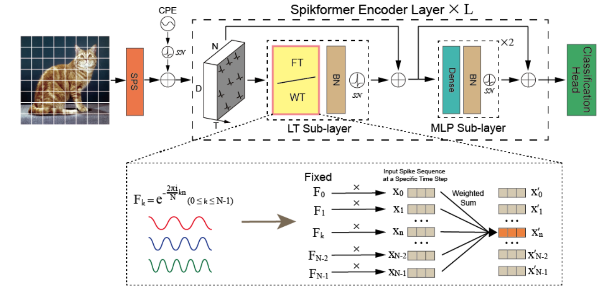

|
My name is Min Zhao. I am a postdoctoral researcher at Tsinghua University, working under the supervision of Prof. Jun Zhu. I have collaborated closely with Prof. Chongxuan Li. My research interests include AIGC, especially for image/video/3D generation with diffusion models. Feel free to connect with me for research collaborations or discussions related to the above topics. Email / Google Scholar / GitHub / |
|
|
|
- [2024.05] 🎉 Two papers: MM-LLMs and WT\&WF are accepted by ACL2024. See you in Bangkok!
- [2024.05] 🎉 One paper: PPAE is accepted by ICML2024.
- [2024.02] 📣 Stay updated on our latest review articles regarding MM-LLMs.
- [2023.10] 🎉 One paper: SPN-GA is accepted by Machine Intelligence Research (MIR).
- [2023.10] 🎉 One paper: CPFD is accepted by EMNLP2023 Main Conference as a Long Paper. See you in Singapore!
- [2023.09] 🎉 One paper: ODE-RNN4RL is accepted by NeurIPS2023.
- [2023.08] 🎉 One paper: RDP is accepted by CIKM2023 as a Long Paper. (Oral)
- [2023.05] 🎉 One paper: DualGATs is accepted by ACL2023 Main Conference as a Long Paper.
- [2023.04] 🎉 One paper: DLD is accepted by SIGIR2023.
- [2023.02] 🎉 One paper: FISS is accepted by CVPR2023.
- [2023.01] 🎉 One paper: SAMGN is accepted by IEEE TMM.
|
|
- Emotion Analysis in Conversational Systems: [COLING2020] , [COLING2022] , [IEEE TMM] , [ACL2023]
- Brain-inspired Intelligence, Spiking Neural Networks, Reinforcement Learning: [AAAI2022] , [IJCAI2022], [AAAI2023], [人工智能] , [MIR2023], [Preprint] , [NeurIPS2023]
- Continual Learning in Information Extraction: [CVPR2023] , [SIGIR2023] , [CIKM2023] , [EMNLP2023], [ACL2024]
- Multi-Modal Learning, Multi-Modal Large Language Models: [ACM MM2022] , [MIR2022], [ICML2024], [ACL2024]
|
* denotes equal contribution. |

|
Yong Zhong, Min Zhao, Zebin You, Xiaofeng Yu, Changwang Zhang, Chongxuan Li Arixv Paper / Website |

|
Fan Bao, Chendong Xiang, Gang Yue, Guande He, Hongzhou Zhu, Kaiwen Zheng, Min Zhao, Shilong Liu, Yaole Wang, Jun Zhu Arixv Paper / Website |

|
Min Zhao, Rongzhen Wang, Fan Bao, Chongxuan Li, Jun Zhu Arixv Paper / Code / Website / |

|
Fan Bao, Min Zhao, Zhongkai Hao, Peiyao Li, Chongxuan Li, Jun Zhu ICLR 2023 Paper Code |
|

|
Qingyu Wang*, Duzhen Zhang*, Tielin Zhang, Bo Xu Preprint Paper Code |
|
Conference Reviewers: AAAI2023, IJCAI2023, ACL2023, EMNLP2023, AAAI2024, CVPR2024, IJCAI2024, ACL2024, EMNLP2024 Journal Reviewers: Computer Speech & Language |